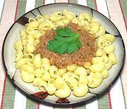

|
Crab Sauce for PastaItaly - Pasta el Granchi | ||||
| For 12 oz Effort: Sched: DoAhead: |
Pasta ** 45 min Yes |
This is a delightfully tasty light sauce for summer pasta dishes, or whenever you want a sauce that's a little different from the standards. It's also quite easy to make. | |||
|
|
6 1 6 1/2 2 2 1/4 1 1/3 12 |
oz oz oz c T T c T t oz |
Onion red Celery can Crab Meat (1) Fish Stock (2) Butter Olive Oil ExtV White Wine, dry Tomato Paste Salt Pasta |
Prep - (15 min)
|